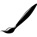

Your Next Open Source Software Company
What Makes Krafsidon Special?
All products that Krafsidon makes are open-source
Our main product, Pelion OS, is based on Linux
Our software is highly customizable, in order to meet your needs
Krafsidon products have been made with ❤️ in Greece
Easy to use, Krafsidon products were made to offer you the best experience
Our main product, Pelion OS, utilizes the highly-configurable KDE Plasma UI
